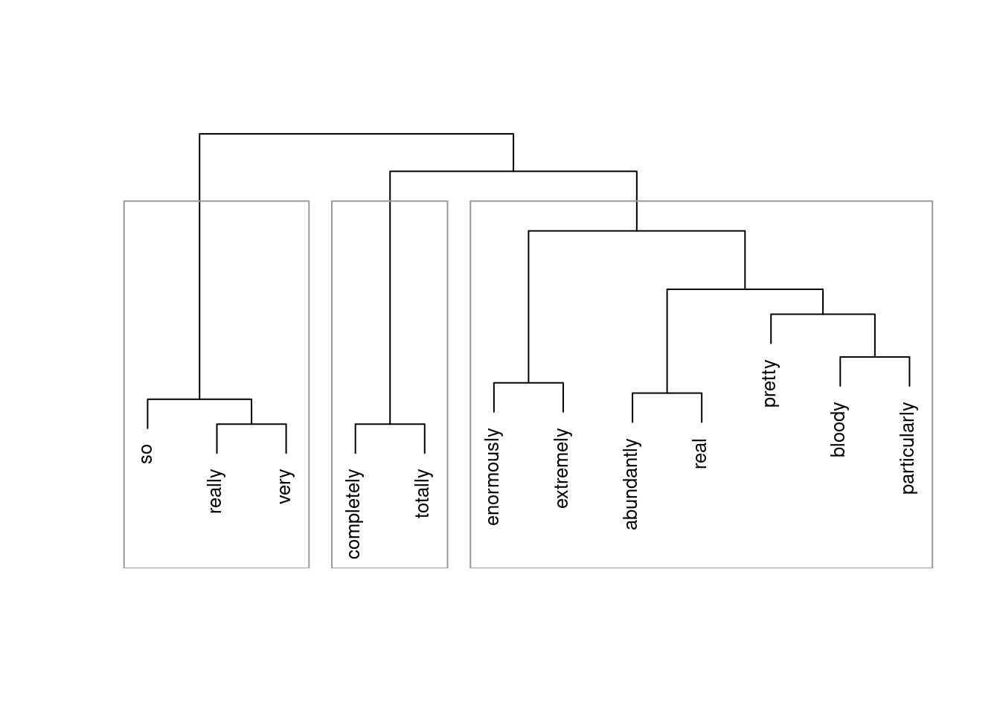

Semantic Vector Space Models in R
Introduction
This tutorial introduces Semantic Vector Space (SVM) modeling R. SVMs are used to find groups or patterns in data or to predict group membership. As such, they are widely used and applied in machine learning. In linguistics, SVMs are used frequently in distributional semantics to identify and analyse synonymy and in grammar-based analyses of determine group membership of specific words or word classes.
This tutorial is aimed at beginners and intermediate users of R with the aim of showcasing how to generate and visualize results of SVMs in R. The aim is not to provide a fully-fledged analysis but rather to show and exemplify selected useful methods associated with SVMs.
The entire R Notebook for the tutorial can be downloaded here. If you want to render the R Notebook on your machine, i.e. knitting the document to html or a pdf, you need to make sure that you have R and RStudio installed and you also need to download the bibliography file and store it in the same folder where you store the Rmd file.
Preparation and session set up
This tutorial is based on R. If you have not installed R or are new to it, you will find an introduction to and more information how to use R here. For this tutorials, we need to install certain packages from an R library so that the scripts shown below are executed without errors. Before turning to the code below, please install the packages by running the code below this paragraph. If you have already installed the packages mentioned below, then you can skip ahead and ignore this section. To install the necessary packages, simply run the following code - it may take some time (between 1 and 5 minutes to install all of the libraries so you do not need to worry if it takes some time).
# set options
options(stringsAsFactors = F) # no automatic data transformation
options("scipen" = 100, "digits" = 4) # suppress math annotation
# install libraries
install.packages(c("cluster", "factoextra", "cluster",
"seriation", "pvclust", "ape", "vcd",
"exact2x2", "factoextra", "seriation",
"NbClust", "pvclust"))
install.packages("coop")
install.packages("tm")Once you have installed R and RStudio and initiated the session by executing the code shown above, you are good to go.
1 Vector Space Models
Vector Space Models are particularly useful when dealing with language data as they provide very accurate estimates of semantic similarity based on word embeddings (or co-occurrence profiles). Word embeddings refer to the vectors which hold the frequency information about how frequently a given word has co-occurred with other words. If the ordering of co-occurring words remains constant, then the vectors can be used to determine which words have similar profiles.
To show how vector space models work, we will follow the procedure described in [1]. However, we will not use her Rling package, which is not supported my R version 4.0.2, to calculate cosine similarities but rather the coop package [see 2]. In this tutorial, we investigate similarities among amplifiers based on their co-occurrences (word embeddings) with adjectives. Adjective amplifiers are elements such as those in 1. to 5.
- The veryamplifier niceadjective man.
- A truelyamplifier remarkableadjective woman.
- He was reallyamplifier hesitantadjective.
- The child was awefullyamplifier loudadjective.
- The festival was soamplifier amazingadjective!
The similarity among adjective amplifiers can then be used to find clusters or groups of amplifiers that “behave” similarly and are interchangeable. To elaborate, adjective amplifiers are interchangeable with some variants but not with others (consider 6. to 8.; the question mark signifies that the example is unlikely to be used or grammatically not acceptable by L1 speakers of English).
- The veryamplifier niceadjective man.
- The reallyamplifier niceadjective man.
- ?The completelyamplifier niceadjective man.
We start by loading the required packages, the data, and then displaying the data which is called “vsmdata” and consist of 5,000 observations of adjectives and contains two columns: one column with the adjectives (Adjectives) and another column which has the amplifiers (“0” means that the adjective occurred without an amplifier).
# load packages
library(coop)
library(dplyr)
library(tm)
library(cluster)
library(DT)
# load data
vsmdata <- read.delim("https://slcladal.github.io/data/vsmdata.txt", sep = "\t", header = T)
# inspect data
datatable(vsmdata, rownames = FALSE, filter="top", options = list(pageLength = 5, scrollX=T))For this tutorial, we will reduce the number of amplifiers and adjectives and thus simplify the data to render it easier to understand what is going on. To simplify the data, we remove
- all non-amplified adjectives
- the adjectives many and much
- adjectives that are amplified less than 10 times
In addition, we collapse all amplifiers that occur less than 20 times into a bin category (other).
# simplify data
vsmdata_simp <- vsmdata %>%
# remove non-amplifier adjectives
dplyr::filter(Amplifier != 0,
Adjective != "many",
Adjective != "much") %>%
# collapse infrequent amplifiers
dplyr::group_by(Amplifier) %>%
dplyr::mutate(AmpFreq = dplyr::n()) %>%
dplyr::ungroup() %>%
dplyr::mutate(Amplifier = ifelse(AmpFreq > 20, Amplifier, "other")) %>%
# collapse infrequent adjectives
dplyr::group_by(Adjective) %>%
dplyr::mutate(AdjFreq = dplyr::n()) %>%
dplyr::ungroup() %>%
dplyr::mutate(Adjective = ifelse(AdjFreq > 10, Adjective, "other")) %>%
dplyr::filter(Adjective != "other") %>%
dplyr::select(-AmpFreq, -AdjFreq)
# inspect data
datatable(vsmdata_simp, rownames = FALSE, filter="top", options = list(pageLength = 5, scrollX=T))In a next step, we create a matrix from this data frame which maps how often a given amplifier co-occurred with a given adjective. In text mining, this format is called a text-document matrix or tdm (which is a transposed document-term matrix of dtm).
# tabulate data (create term-document matrix)
tdm <- ftable(vsmdata_simp$Adjective, vsmdata_simp$Amplifier)
# extract amplifiers and adjectives
amplifiers <- as.vector(unlist(attr(tdm, "col.vars")[1]))
adjectives <- as.vector(unlist(attr(tdm, "row.vars")[1]))
# attach row and column names to tdm
rownames(tdm) <- adjectives
colnames(tdm) <- amplifiers
# inspect data
tdm[1:5, 1:5] other pretty really so very
bad 2 1 8 3 2
big 0 3 4 2 4
clear 2 1 2 2 4
different 8 0 2 0 3
difficult 4 1 2 1 18Now that we have a term document matrix, we want to remove adjectives that were never amplified. Note however that if we were interested in classifying adjectives (rather than amplifiers) according to their co-occurrence with amplifiers, we would, of course, not do this, as not being amplified would be a relevant feature for adjectives. But since we are interested in classifying amplifiers, not amplified adjectives do not have any information value.
# convert frequencies greater than 1 into 1
tdm <- t(apply(tdm, 1, function(x){ifelse(x > 1, 1, x)}))
# remove adjectives that we never amplified
tdm <- tdm[which(rowSums(tdm) > 1),]
# transpose tdm because we are interested in amplifiers not adjectives
tdm <- t(tdm)
# inspect data
tdm[1:5, 1:5]
bad big clear different difficult
other 1 0 1 1 1
pretty 1 1 1 0 1
really 1 1 1 1 1
so 1 1 1 0 1
very 1 1 1 1 1In a next step, we extract the expected values of the co-occurrences if the amplifiers were distributed homogeneously and calculate the Pointwise Mutual Information (PMI) score and use that to then calculate the Positive Pointwise Mutual Information (PPMI) scores. According to [1] 327 - referring to [3] - PPMI perform better than PMI as negative values are replaced with zeros. In a next step, we calculate the cosine similarity which will for the bases for the subsequent clustering.
# compute expected values
tdm.exp <- chisq.test(tdm)$expectedWarning in chisq.test(tdm): Chi-squared approximation may be incorrect# calculate PMI and PPMI
PMI <- log2(tdm/tdm.exp)
PPMI <- ifelse(PMI < 0, 0, PMI)
# calculate cosine similarity
cosinesimilarity <- cosine(PPMI)
# inspect cosine values
cosinesimilarity[1:5, 1:5] bad big clear different difficult
bad 1.0000000 0.6764053 1.0000000 0.6496309 1.0000000
big 0.6764053 1.0000000 0.6764053 0.0000000 0.6764053
clear 1.0000000 0.6764053 1.0000000 0.6496309 1.0000000
different 0.6496309 0.0000000 0.6496309 1.0000000 0.6496309
difficult 1.0000000 0.6764053 1.0000000 0.6496309 1.0000000As we have now obtained a similarity measure, we can go ahead and perform a cluster analysis on these similarity values. However, as we have to extract the maximum values in the similarity matrix that is not 1 as we will use this to create a distance matrix. While we could also have simply subtracted the cosine similarity values from 1 to convert the similarity matrix into a distance matrix, we follow the procedure proposed by [1].
# find max value that is not 1
cosinesimilarity.test <- apply(cosinesimilarity, 1, function(x){
x <- ifelse(x == 1, 0, x) } )
maxval <- max(cosinesimilarity.test)
# create distance matrix
amplifier.dist <- 1 - (cosinesimilarity/maxval)
clustd <- as.dist(amplifier.dist)In a next step, we want to determine the optimal number of clusters. This has two reasons: firstly, we need to establish that we have reason to assume that the data is not homogeneous (this would occur if the optimal number of clusters were 1), and, secondly, we want check how many meaningful clusters there are in our data.
# find optimal number of clusters
asw <- as.vector(unlist(sapply(2:nrow(tdm)-1, function(x) pam(clustd, k = x)$silinfo$avg.width)))
# determine the optimal number of clusters (max width is optimal)
optclust <- which(asw == max(asw))+1 # optimal number of clusters
# inspect clustering with optimal number of clusters
amplifier.clusters <- pam(clustd, optclust)
# inspect cluster solution
amplifier.clusters$clustering bad big clear different difficult good
1 2 1 3 1 1
hard important interesting nice strong
2 3 4 4 4 In a next step, we visualize the results of the semantic vector space model as a dendrogram.
# create cluster object
cd <- hclust(clustd, method="ward.D")
# plot cluster object
plot(cd, main = "", sub = "", yaxt = "n", ylab = "", xlab = "", cex = .8)
# add colored rectangles around clusters
rect.hclust(cd, k = 6, border = "gray60")
The clustering solution shows that, as expected, completely and totally - while similar to each other and thus interchangeable with each other - form a separate cluster from all other amplifiers. In addition, very and really form a cluster together with the zero variant. This is likely so because really, very, and the zero variant are the most frequent “variants” but also co-occur with the most variety of adjectives. The results can be interpreted to suggest that really and very are “default” amplifiers that lack distinct semantic profiles.
There are many more useful methods for classifying and grouping data and the tutorial by Gede Primahadi Wijaya Rajeg, Karlina Denistia, and Simon Musgrave [4] highly recommended to get a better understanding of SVM but this should suffice to get you started.
Citation & Session Info
Schweinberger, Martin. 2022. Semantic Vector Space Models in R. Brisbane: The University of Queensland. url: https://slcladal.github.io/svm.html (Version 2022.08.31).
@manual{schweinberger2022svm,
author = {Schweinberger, Martin},
title = {Semantic Vector Space Models in R},
note = {https://slcladal.github.io/svm.html},
year = {2020},
organization = "The University of Queensland, Australia. School of Languages and Cultures},
address = {Brisbane},
edition = {2022.08.31}
}sessionInfo()R version 4.2.1 (2022-06-23)
Platform: x86_64-pc-linux-gnu (64-bit)
Running under: Ubuntu 22.04.1 LTS
Matrix products: default
BLAS: /usr/lib/x86_64-linux-gnu/blas/libblas.so.3.10.0
LAPACK: /usr/lib/x86_64-linux-gnu/lapack/liblapack.so.3.10.0
locale:
[1] LC_CTYPE=en_AU.UTF-8 LC_NUMERIC=C
[3] LC_TIME=en_AU.UTF-8 LC_COLLATE=en_AU.UTF-8
[5] LC_MONETARY=en_AU.UTF-8 LC_MESSAGES=en_AU.UTF-8
[7] LC_PAPER=en_AU.UTF-8 LC_NAME=C
[9] LC_ADDRESS=C LC_TELEPHONE=C
[11] LC_MEASUREMENT=en_AU.UTF-8 LC_IDENTIFICATION=C
attached base packages:
[1] stats graphics grDevices utils datasets methods base
other attached packages:
[1] DT_0.24 cluster_2.1.3 tm_0.7-8 NLP_0.2-1 dplyr_1.0.9
[6] coop_0.6-3
loaded via a namespace (and not attached):
[1] Rcpp_1.0.8.3 jquerylib_0.1.4 bslib_0.3.1 pillar_1.7.0
[5] compiler_4.2.1 tools_4.2.1 digest_0.6.29 jsonlite_1.8.0
[9] evaluate_0.15 lifecycle_1.0.1 tibble_3.1.7 pkgconfig_2.0.3
[13] rlang_1.0.4 cli_3.3.0 DBI_1.1.3 rstudioapi_0.13
[17] crosstalk_1.2.0 yaml_2.3.5 parallel_4.2.1 xfun_0.31
[21] fastmap_1.1.0 stringr_1.4.0 knitr_1.39 xml2_1.3.3
[25] sass_0.4.1 generics_0.1.3 vctrs_0.4.1 htmlwidgets_1.5.4
[29] tidyselect_1.1.2 glue_1.6.2 R6_2.5.1 fansi_1.0.3
[33] rmarkdown_2.14 purrr_0.3.4 magrittr_2.0.3 ellipsis_0.3.2
[37] htmltools_0.5.2 assertthat_0.2.1 utf8_1.2.2 stringi_1.7.8
[41] slam_0.1-50 crayon_1.5.1 References
1.
Levshina, N.: How to do linguistics with r: Data exploration and statistical analysis. John Benjamins Publishing Company, Amsterdam (2015).
2.
Schmidt, D., Heckendorf, C.: Coop: Co-operation: Fast covariance, correlation, and CosineSimilarity operations. (2019).
3.
Bullinaria, J.A., Levy, J.P.: Extracting semantic representations from word co-occurrence statistics: A computational study. Behavior Research Methods. 39, 510–526 (2007).
4.
Rajeg, G.P.W., Denistia, K., Musgrave, S.: R markdown notebook for vector space model and the usage patterns of indonesian denominal verbs, https://doi.org10.6084/m9.figshare.9970205. https://figshare.com/articles/R\%5FMarkdown\%5FNotebook\%5Ffor\%5Fi\%5FVector\%5Fspace\%5Fmodel\%5Fand\%5Fthe\%5Fusage\%5Fpatterns\%5Fof\%5FIndonesian\%5Fdenominal\%5Fverbs\%5Fi\%5F/9970205, (2019).